Skynet: End To End Machine Learning
FOSS4G 2017
The open source libraries for machine learning have dramatically improved over the past two years. However the related tools for managing a machine learning process are still lacking. In particular, there are few good tools for collecting and preparing training data; vectorizing and stitching computer vision outputs; and cleaning and reprocessing.The Skynet suite is an end-to-end set of tools for extracting useful data from a machine learning process. Skynet is optimized for feature detection from satellite and drone imagery. At its core Skynet is an application of Segnet, a convolutional neural network approach to semantic segmentation. We've built a suite of tools around Skynet to collect and manage training data, inventory trained models, produce useful vectorized data outputs, and to optimize cleaning of that data. The Skynet suite primarily leverages the OSM ecosystem for training data. Skynet-data ingests data from OSM and prepares it for use as training data. Skynet-collect is a set of OSM based data collection tools. Skynet-scrub is used by data scrubbers to quickly clean and improve the outputs of the computer vision process. Data created by Skynet can be pushed directly into an private-OSM instance, staged for inclusion in global-OSM, or exported for use in another tool or app.
A quick recap
For more information: check out our blog and prior talks: https://developmentseed.org/blog/2016/08/17/sotm-skynet/, https://developmentseed.org/blog/2017/01/30/machine-learning-learnings/, https://developmentseed.org/blog/2017/04/21/end-to-end-ml/
OSM + satellite imagery is a great fit for machine learning.
To say why, I'll give a quick explanation of what ML is for those unfamiliar with it.
Satellite imagery + OSM (ground truth) = amazing training data
In general, one of the biggest challenges in machine learning is getting good training data, and this is what I mean about imagery + OSM being a great fit for machine learning: it represents an amazing source of training data.
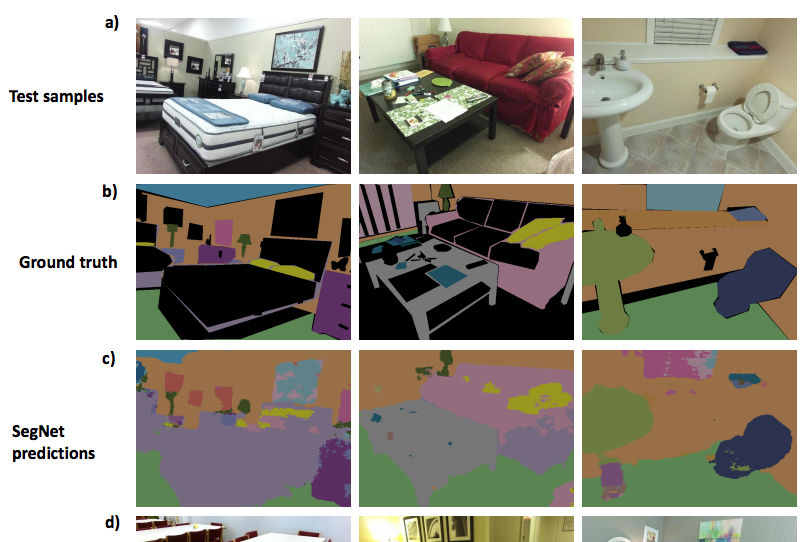
My experiments so far have all been based on a particular neural network model called SegNet.
- "semantic segmentation" = essentially carving up an image into distinct, categorized pieces
- Late 2015, by researchers at University of Cambridge
- Based on the "VGG-16" network, which was also one of the ImageNet winners in 2014
- 26 or 89 layers, depending on how you count (26 "convolution" layers)
- "State of the art" image segmentation results
Tile server making live predictions of roads as new tiles appear in view. Something of a visual trick but could also be useful for assisted tracing.
The real goal
Collect
Prepare
Train
Predict
Clean
Collect
Prepare
Train
Predict
Clean
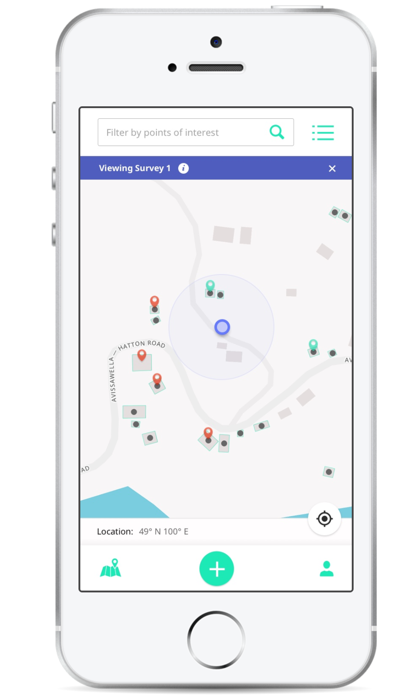
Mobile data collection app. Better out-of-the-box offline-enabled mapping toolkit that syncs to OSM (but lets you keep some of your data private if you want)
Developed in partnership with Digital Democracy (http://www.digital-democracy.org/) and the World Bank (http://www.worldbank.org/)
Collect
Prepare
Train
Predict
Clean
Satellite imagery + OSM (ground truth) = amazing training data
Recap slide
Training data
Mapbox Satellite tiles
OSM QA Tiles → Mapnik → ground truth tiles
Scripts at github.com/developmentseed/skynet-data
My next dream is to make this even easier and lower the barrier to people being able to try out new ideas.
What if we there was a GUI that let you draw a box, view the existing data, specify your training parameters and then hit go?
Collect
Prepare
Train
Predict
Clean
Training a Model
Apply model to inputs
Compare model's prediction to ground truth
Tweak the model based on error
Repeat (a lot)
Once you have those, the big picture idea for ML training is really very simple: you take your model, which starts out completely wrong and random. You apply it to the inputs in your training data to get its "predicted" output, and then compare that to the "known" / "expected" / "ground truth" outputs. Based on the error, tweak the model's parameters to make it better -- e.g., if the outputs were too big, tweak the model to produce smaller numbers. Now repeat... a LOT.
Now, the details -- especially in calculating error and then tweaking model parameters -- that is some subtle stuff which depends quite a bit on the inner workings of the models you're using; but, fortunately, that complexity is mostly taken care of by ML tools and libraries.
Anyway, the real magic here is that if things go well, then after you've trained the model, it will *generalize* beyond the training data, producing (mostly) correct answers for inputs that *weren't* in your training data.
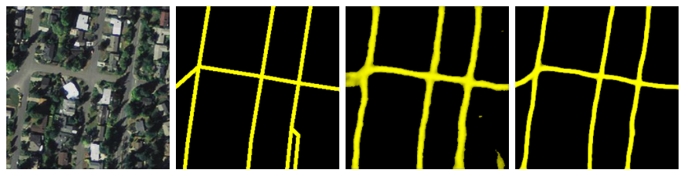
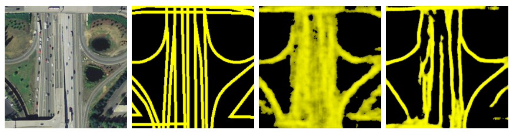
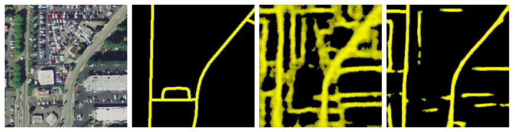
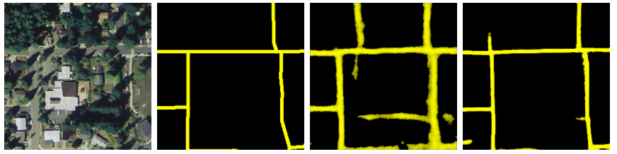
Here's how the model did.
More data → better predictions
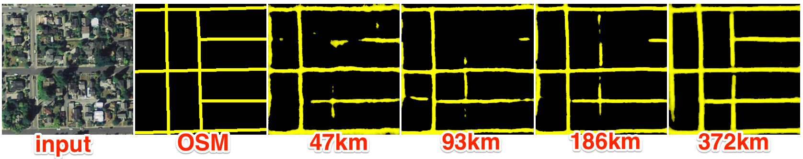
Prediction quality is highly dependent upon the amount of training data supplied
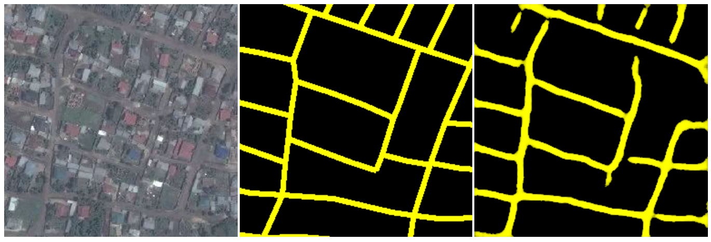
It's also important that we have good training data. Here we've pulled data from a place where a HOTOSM task took place.
We had good confidence that the buildings and roads would be more complete and well registered with the source images.
Training and testing scripts: github.com/developmentseed/skynet-trainIf you're interested in getting started with ML, specifically convolutional neural networks, I highly recommend: https://cs231n.github.io
Collect
Prepare
Train
Predict
Clean
Recap slide. Speed of prediction is high. First level output is raster/png
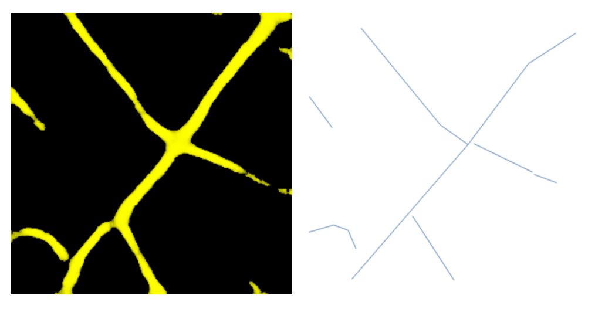
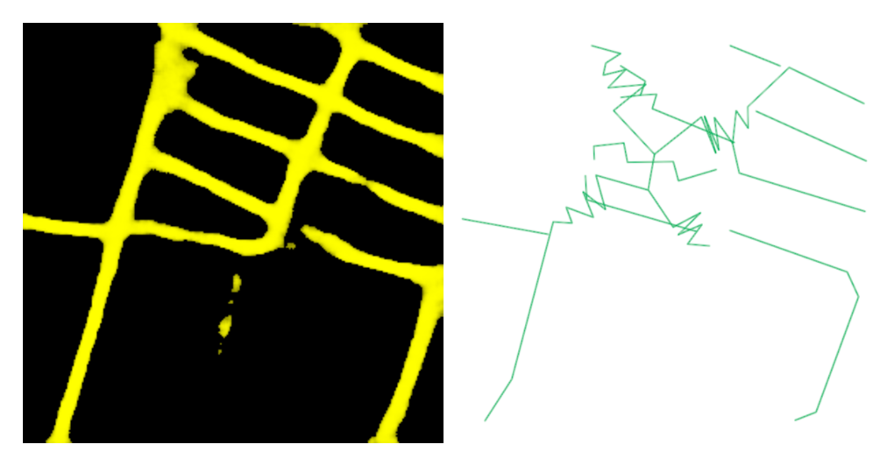
We tried a quick, per tile algorithm. It was fast but produces some spaghetti when it had trouble polygonizing.
We also we're going to have to join across tile boundaries
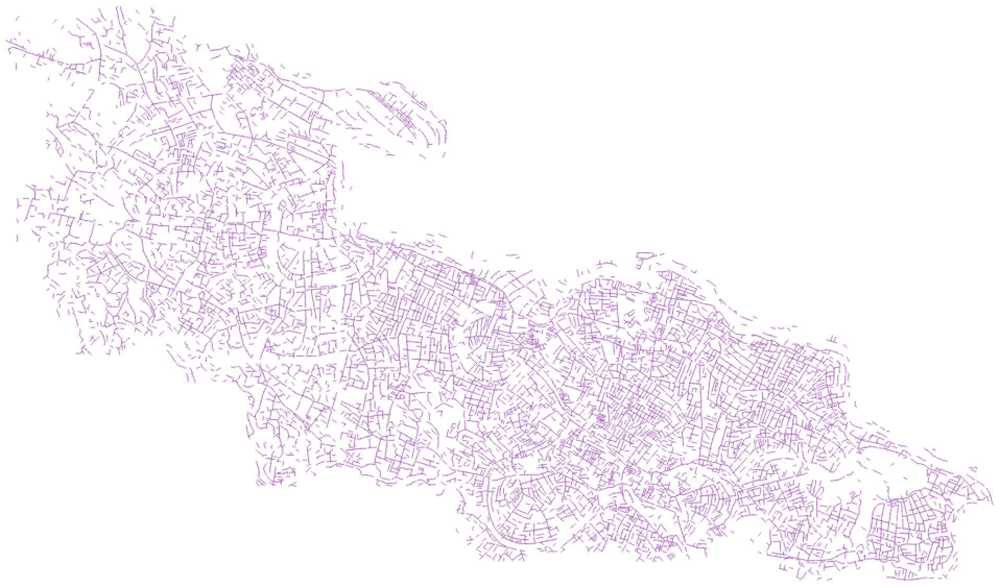
Instead, we joined everything up first and did a slower, pixel following algorithm
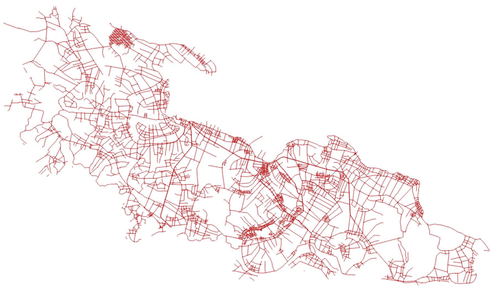
As is often the case, there is already an existing mapped road network in Yen Dinh
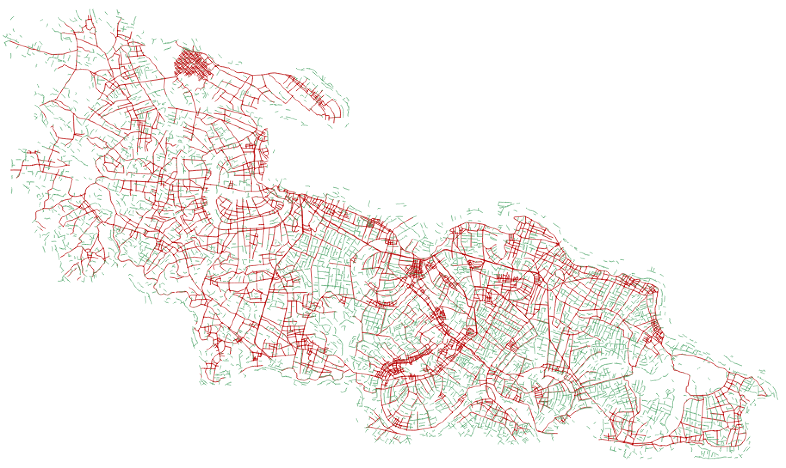
We used https://github.com/mapbox/linematch to calculate a diff
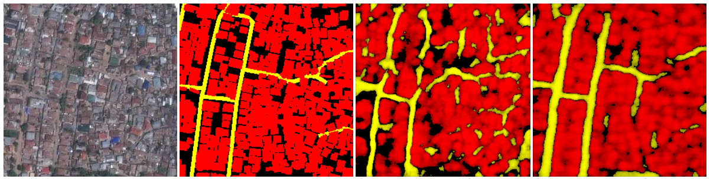
Our edges our fuzzy but detection is good. There are a few newer techniques we're interested in trying: http://cs231n.stanford.edu/reports/2017/pdfs/550.pdf + incorporating edge detection as an input
Power Lines from SAR
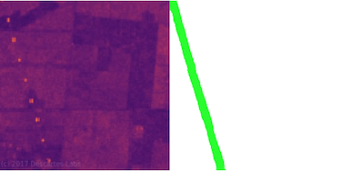
Blog post on this forthcoming. We can detect at zoom 12 even when the pixel resolution (and visual imagery) "shouldn't" support this. Metal is very reflective to SAR.
Schools
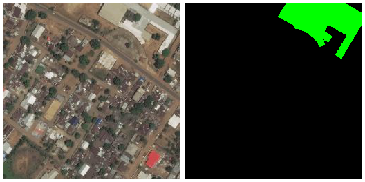
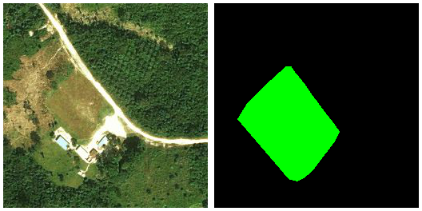
Labels here sometimes show building, sometimes grounds. There are lots of things we can pick out (grounds, roofs) but it's tough on a single pass. Our next attempt will be buildings then use-case as a separate classifier
What's Next?
If you want to help us out, check out the repos or https://developmentseed.org/careers/jobs/
Easier data preparation
More use cases
Better evaluation metrics
Free Talk Idea
RNN's are a type of neural net that have been very successful at "image captioning", wherein the net goes straight from an image to a meaningful, variable-length sequence of words. Since it's going image => symbolic/structured sequence, this makes me wonder if RNN could be used to go straight from an image to vector data (e.g. coordinate sequence representing road tracing)